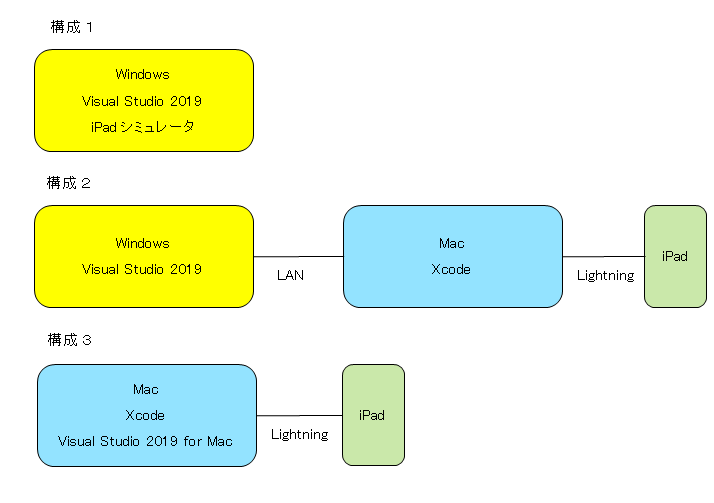

タイトルの通り、iPadアプリを業務で作成したときの振り返りのメモです。個人の備忘録的な内容ですが、どなたかのヒントになればと思い公開しました。
「Xamarin での開発に Mac は必要か？」 今回はこのような知識レベルでスタートしました。(Mac は必要です)
一部の作業を外部に依頼しましたが、基本1名の開発体制です。
この iPad アプリは、ある生産作業の安全状況をチェックし、その結果を記録するためのアプリです。検査員が屋外で使用します。
小規模ですが、RDBアクセス、Excel入出力、カメラ撮像、写真画像保存、手書きメモ入出力、グラフ描画などの機能があります。 業務用のため、アプリの配布に AppStore は使えません。 社内配布 (エンタープライズ配布) を使うほどの規模も予算もありませんので、今回は、アドホック配布で展開しました。

[構成１]
シミュレータでテストします。実機での確認はできません。そのため、カメラ撮像などの実機でしか動作しない機能はテストできません。
[構成２]
1台の Mac を複数の Windows から共有したい場合は、このような構成になりそうです。
[構成３]
Mac や iPad を共有する必要がなければ、この構成が最も簡単です。今回は、Xamarin や Mac の知識がなかったため、構成１ → 構成２ → 構成３と変遷しました。
Mac ははじめてでしたが、Xcode と Visual Studio 2019 for Mac を起動できればなんとかなりそうです。 あとはほぼ、Visual Studio 2019 for Mac での作業になりますので、Visual Studio に慣れていれば、大きな問題はありませんでした。 Windows 版の Visual Studio と同様に作業できます。 Xcode は起動する程度ですが、最初だけはプロジェクトを作成して、何か設定が必要だったかもしれません。 ただし、それは、最初に無償ライセンスを使って試していたからかもしれません。
アプリを実機に配布する方法は何通りかあります。自らの状況に最も適した方法を見つけることは容易ではありませんでした。とくに、 納期に追われていると、答えだけを求めてネットを迷走し、その結果、良くない情報につかまったりもしました。 無料という言葉にも振り回されました。
今回、筆者なりの結論としては、
・Visual Studio 2019 自動プロビジョニングを使う。
・Apple Developer Program (有料) を取得する。
が良いと思います。 無料でも出来そうですが、 そのために、追加の設定が必要だったり、配布台数の制限があったっりします。 業務で使うのであれば、最初から有料ライセンスをお勧めします。
筆者は、証明書やプロビジョニングプロファイルなどには関心も知識も時間もありませんでしたので 、とにかく、確実に配布できる、必要最小限の手順を探しました。
ソリューションを新規作成すると、次の3つのプロジェクトが生成されます。
・共有プロジェクト
・iOS用プロジェクト
・Android用プロジェクト
基本的には、共有プロジェクトに実装しますが、幾つかの機能については iOS用プロジェクトに実装する必要があります。例えば、ファイル入出力、プレビュー機能、手書き入出力機能は iOSプロジェクト側に実装し、共有プロジェクトから参照できるようにします。Android用プロジェクトは、今回は使用しないので削除しました。
今回使用した主なライブラリは以下の通りです。
DocumentFormat.OpenXml
SQLite
SkiaSharp
Xamarin.Plugin.Media
Xamarin.Forms
iOS
SkiaSharp